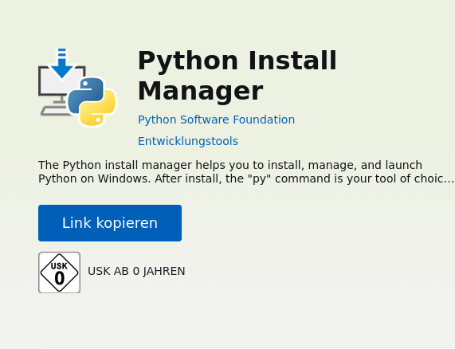
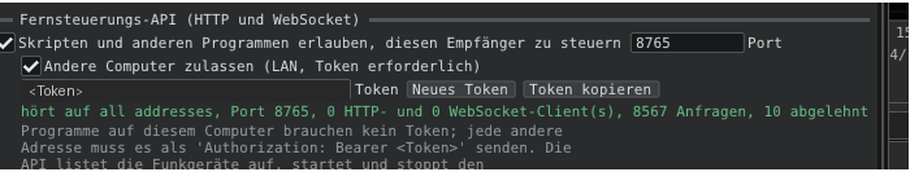
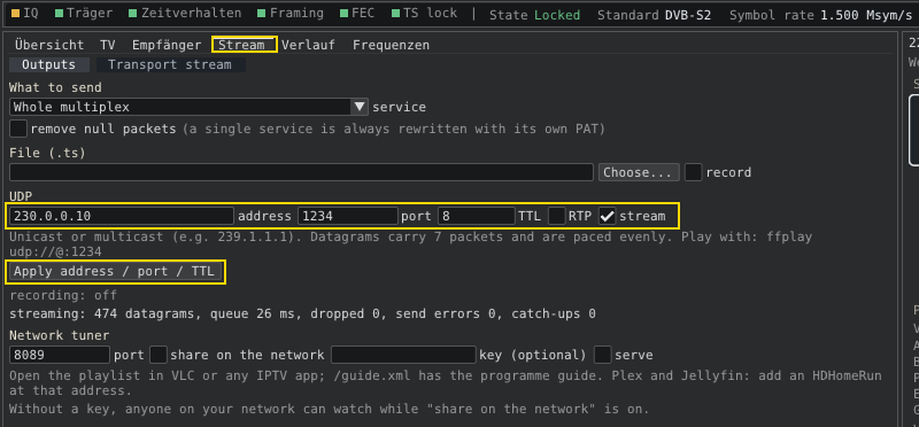
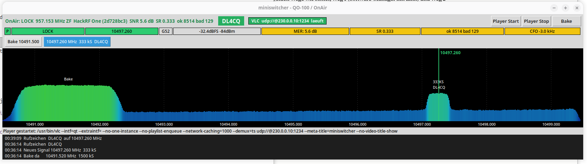

Kleine Bedienung für QO-100 mit dem OnAir-Fenster (DG7NDV). Sie zeigt nur das BATC-Spektrum. Ein Klick auf ein Signal stellt das OnAir-Fenster darauf ein, der Player spielt den Stream.

Zwei Wege zur Installation:
Python Install Manager der Python Software Foundation:
https://apps.microsoft.com/detail/9nq7512cxl7t?hl=de-DE&gl=DE
– „Herunterladen“ bzw. „Im Store anzeigen“ → Installieren. Danach steht der Befehl py zur Verfügung.
winget install Python.Python.3.12
py -m pip install websocket-client # Zusatzmodul fuer das BATC-Spektrum winget install VideoLAN.VLC # Player (falls noch nicht da) winget install Gyan.FFmpeg # ffprobe fuer die Rufzeichen-Erkennung py miniswitcher.py # starten (im Ordner mit miniswitcher.py)
tkinter (Fenster) ist bei diesem Python schon dabei. Fehlt doch etwas, meldet der miniswitcher es beim Start mit dem passenden Installationsbefehl.
Der miniswitcher steuert ein laufendes OnAir-Fenster über dessen Fernsteuerungs-API und spielt den Stream, den OnAir per UDP aussendet. Dafür sind im OnAir-Fenster zwei Einstellungen nötig.
Menü Ansicht → Datafeeds (englisch: View → Data feeds), Abschnitt „Fernsteuerungs-API (HTTP und WebSocket)“:
~/.config/onair/settings.conf).
OnAir speichert diese Einstellung, sie gilt bei jedem Start.
Tab Stream → Outputs, Abschnitt UDP (im Bild gelb umrahmt):
230.0.0.10, port 1234, TTL so lassen.
OnAir-udp-api.patch, dort schaltet der
miniswitcher ihn automatisch per API.RF − LO. Ein falscher LO ist der häufigste Grund für „kein Lock“.
--lo 9750 (die Bake 10491,5 MHz liegt dann bei 741,5 MHz ZF)--lo 9570 oder --lo 9540 (Standard des Programms)./miniswitcher.py --lo 9750Den LO kann man auch oben rechts im gelben Feld LNB-LO ändern („setzen“ oder Enter); er wird gespeichert und gilt beim nächsten Start (eine
--lo-Angabe hat Vorrang). Bei einem neuen LO wird die automatische LO-Korrektur zurückgesetzt
und auf der Bake neu gemessen (Anzeige „Korr ± kHz“ neben dem Feld)../miniswitcher.py # OnAir bei Bedarf starten und einrichten ./miniswitcher.py --only-api # nur die Frequenz an Port 8765 schicken ./miniswitcher.py --device "sdrplay;rsp2;antenna a" --gain 59

Beispiel: OnAir (HackRF) ist auf 10497,260 MHz eingerastet und empfängt DL4CQ mit 333 kS.
| Bereich (von oben) | Inhalt |
|---|---|
| Kopfzeile | OnAir-Zustand in Kurzform (LOCK, ZF, Gerät, SNR, SR, ok/bad), grün das aktuelle
Rufzeichen, daneben der Player mit Adresse (VLC udp://@230.0.0.10:1234 läuft); rechts die Knöpfe
Player Start / Player Stop / Bake. |
| Werte-Zeile | P (Empfang läuft), Zustand (LOCK), Frequenz (grün = wie angeklickt), Verstärkung (G52), Pegel (dBFS + grobe dBm-Schätzung), MER (nur bei Lock), Symbolrate, ok/bad-Blöcke (rot, wenn „bad“ gerade steigt), CFO (Träger-Versatz). |
| Signal-Knöpfe | ein Knopf je Signal – hier „Bake 10491.500“ und blau (= eingestellt) „10497.260 MHz 333 kS DL4CQ“. Neue Signale grün, verschwundene rot (nach 10 s weg). |
| Spektrum | BATC-Spektrum 10490,5–10499,5 MHz mit Farbverlauf; über den Signalen Symbolrate und Rufzeichen, die grüne Linie markiert die eingestellte Frequenz. Klick ins Spektrum stellt dort ein. |
| Statuszeile | letzte Meldung (hier der Player-Start mit allen Optionen). |
| Ereignisse | die letzten vier Ereignisse mit Uhrzeit: Rufzeichen erkannt, neues Signal, Bake da, Signal weg. |
| Situation | Ablauf |
|---|---|
| Kein OnAir-Fenster offen | In ~/.config/onair/settings.conf werden Remote-API (Port 8765) und UDP-Ziel eingetragen, OnAir wird mit Oberfläche gestartet. Danach per API: Stopp → DVB-S/S2 → Start (mit --device, sonst das in OnAir eingestellte Gerät) → Abtastrate (Symbolrate × 4, 2–10 Msps) → Frequenz → ggf. Gain → UDP-Ausgabe ein. |
| OnAir läuft, Empfang aus | Einrichten wie oben, ohne Neustart des Fensters. |
| OnAir läuft und empfängt | Nur die Frequenz (und bei anderer Symbolrate die Abtastrate) wird gesetzt. |
--only-api | Nur POST /api/v1/frequency an 127.0.0.1:8765, sonst nichts. |
Die Frequenz an OnAir ist die ZF: RF − LO + LO-Korrektur (LO Standard 9540 MHz, --lo).
Steht der Empfänger auf der Bake und lockt, wird der Träger-Versatz einmal als LO-Korrektur übernommen und in
~/.leandvb-GUI/miniswitcher.json gespeichert.
Unter der Werte-Zeile steht für jedes erkannte Signal ein Knopf (wie im Hauptprogramm). Ein Klick stellt das Signal ein.
| Farbe | Bedeutung |
|---|---|
| grün | neues Signal (die ersten 30 s) |
| blau | gerade eingestellt |
| rot | Signal verschwunden – der Knopf wird nach 10 s gelöscht (kommt es wieder, wird er wieder grün) |
| grau | bekanntes Signal |
udp://@230.0.0.10:1234 (änderbar mit --udp).--player mpv|ffplay, --no-player), startet automatisch und wird alle 5 s
neu gestartet, falls er nicht mehr läuft. Oben steht Player, Adresse und Zustand, z.B. VLC udp://@230.0.0.10:1234 läuft
(grün = läuft, orange = startet, grau = mit „Player Stop“ angehalten). Knöpfe „Player Start/Stop“ oben rechts.ffprobe aus dem Stream gelesen und oben grün angezeigt, im Spektrum am Signal vermerkt.OnAir-udp-api.patch schaltet ihn automatisch.Oben die letzte Meldung, darunter die letzten 4 Ereignisse mit Uhrzeit: Neues Signal, Signal weg (mit dem dort zuletzt erkannten Rufzeichen), Bake da / Bake WEG und Rufzeichen. Die Signale werden wie in der leandvb-GUI entprellt: über 5 s gesammelt, neu ab 50 % der Spektrumbilder, weg unter 20 %.
| Option | Bedeutung |
|---|---|
--only-api | nur Frequenz schicken, OnAir nicht starten/einrichten |
--port 8765 | Remote-API-Port von OnAir |
--lo 9540 | LNB-LO in MHz |
--udp 230.0.0.10:1234 | UDP-Ziel / Player-Quelle |
--device "a;b;c" | Gerät im OnAir (alle Teilstrings müssen passen) |
--gain DB | Verstärkung beim Einrichten |
--player vlc|mpv|ffplay, --no-player | Player-Wahl |
--no-rate | Abtastrate nicht anpassen |
--onair-bin PFAD | anderes OnAir-Programm (z.B. selbst gebautes OnAir/build/dect2) |
--batc-url URL | Adresse des BATC-Spektrums |
Der miniswitcher läuft unter Linux und Windows. Beim Start prüft er, ob alles vorhanden ist, und zeigt für Fehlendes einen Hinweis (Konsole, Statuszeile und ein Hinweisfenster).
| Komponente | wofür | Linux | Windows |
|---|---|---|---|
Python ab 3.6 mit argparse, json, os, shutil, subprocess, sys, threading, time, urllib, struct, math |
Grundfunktionen | sind in Python enthalten | |
tkinter | Fenster | sudo apt install python3-tk |
bei Python von python.org dabei („tcl/tk and IDLE“ ankreuzen) |
websocket-client (einziges Zusatzmodul) | BATC-Spektrum | pip3 install websocket-client --break-system-packagesoder sudo apt install python3-websocket |
py -m pip install websocket-client |
| OnAir | Empfang | OnAir-.deb (onair im PATH) |
OnAir-Installer; wird in den Programmordnern gefunden, sonst --onair-bin |
| VLC (oder mpv / ffplay) | Player | sudo apt install vlc |
videolan.org – Standardpfad wird automatisch gefunden |
| ffprobe (ffmpeg) | Rufzeichen | sudo apt install ffmpeg |
ffmpeg.org, Ordner bin in den PATH oder nach C:\ffmpeg\bin |
Unter Windows liegt die OnAir-Einstellungsdatei in %APPDATA%\OnAir\settings.conf, die Logs des miniswitchers in
%USERPROFILE%\.leandvb-GUI\.
Verwendete Python-Module: argparse, json, os, sys, shutil, subprocess, threading, time, urllib.request,
urllib.error, struct, math, glob (in Python enthalten), tkinter mit ttk und
messagebox (Fenster) und als einziges Zusatzmodul websocket aus dem Paket
websocket-client (BATC-Spektrum). Externe Programme: OnAir, VLC (oder mpv/ffplay),
ffprobe aus ffmpeg (Rufzeichen-Erkennung).
./miniswitcher_install.sh # pruefen + fehlendes per apt installieren ./miniswitcher_install.sh --check # nur pruefen
Oder von Hand als Mini-Skript:
sudo apt update sudo apt install -y python3 python3-tk python3-websocket vlc ffmpeg # falls python3-websocket fehlt: pip3 install websocket-client --break-system-packages # OnAir: .deb von https://on-air.dev sudo apt install ./onair_<version>_amd64.deb chmod +x miniswitcher.py ./miniswitcher.py --lo 9750
winget install Python.Python.3.12 # oder Python Install Manager aus dem Store (siehe oben) py -m pip install websocket-client winget install VideoLAN.VLC winget install Gyan.FFmpeg # OnAir: Installer von https://on-air.dev py miniswitcher.py --lo 9750
Zeigt für jedes Modul „ok“ oder „FEHLT“ (unter Windows py statt python3):
python3 -c "
import importlib
for m in ['argparse','json','os','sys','shutil','subprocess','threading','time','urllib.request',
'urllib.error','struct','math','glob','tkinter','websocket']:
try:
importlib.import_module(m); print('ok ', m)
except ImportError:
print('FEHLT ', m, '(pip install websocket-client)' if m == 'websocket' else '')
"